光学部分⚓︎
约 3129 个字 预计阅读时间 16 分钟
光的干涉⚓︎
基本概念：
- 光程：光在介质中传播的路程 \(r\) 与介质折射率的乘积 \(nr\)
- 折射率 \(n = \dfrac{c}{u}\)，其中 \(c\) 为真空中波速，\(u\) 为介质中波速
- 光强 \(I\)：平均能流密度，与振幅平方成正比
-
波的干涉：
- 相位差\(\Delta \varphi\) 与光程差\(\delta\) 的关系：\(\Delta \varphi = (\varphi_2 - \varphi_1) + \dfrac{2 \pi}{\lambda}\delta\)
-
干涉加强 / 相消与相位差的关系：
- \(\Delta \varphi = 2k\pi\) -> 加强 -> \(k\) 级明纹，此时光强 \(I = I_1 + I_2 + 2\sqrt{I_1 I_2}\)
- \(\Delta \varphi = (2k - 1) \pi\) -> 相消 -> \(k\) 级暗纹，此时光强 \(I = I_1 + I_2 - 2\sqrt{I_1 I_2}\)
-
一般相干光初相位相同，因此 \(\Delta \varphi = \dfrac{2\pi}{\lambda} \delta\)，常用结论为：
- \(\delta = k \lambda\) -> 加强 -> \(k\) 级明纹
- \(\delta = (k - \dfrac{1}{2})\lambda\) -> 相消 -> \(k\) 级暗纹
-
两相干光束（初相相同）通过不同介质在某处相遇时的相位差为：\(\varphi = \dfrac{2\pi}{\lambda}(n_2r_2 - n_1r_1)\)，因此光程差为 \(\delta = n_2r_2 - n_1r_1\)
双缝干涉⚓︎
双缝干涉模型如下所示：
其中：
- \(d\)：相干光源的距离
- \(D\)：光源到屏幕的距离
- \(x\)：所求点 \(P\) 至中心 \(o\) 的距离
- \(\theta\)：中心点与 \(P\) 点连线与水平线之间的夹角
可以得到以下关系：
-
相位差：\(\Delta \varphi = (\varphi_1 - \varphi_2) - \dfrac{2\pi}{\lambda}(r_1 - r_2) = \dfrac{2\pi}{\lambda}(r_2 - r_1) \approx \dfrac{2\pi}{\lambda} d \sin \theta\)（当 \(D \gg d\) 时，\(\delta = r_2 - r_1 \approx d \sin \theta\)）
- 当 \(d \sin \theta = \pm k \lambda\) 时，\(\Delta \varphi = \pm 2k \pi(k = 0, 1, 2, \dots)\) -> 相长干涉，\(k\) 表示第 \(k\) 条亮纹（\(k = 0\) 时为中央亮纹）
- 当 \(d \sin \theta = \pm (2k - 1) \dfrac{\lambda}{2}\) 时，\(\Delta \varphi = \pm (2k - 1) \pi(k = 1, 2, 3, \dots)\) -> 相消干涉，\(k\) 表示第 \(k\) 条暗纹
- 当 \(D \gg x\) 时，\(\sin \theta \approx \tan \theta = \dfrac{x}{D}\)，可解得
- 亮纹的位置：\(x = \pm k \dfrac{D}{d} \lambda\)
- 暗纹的位置：\(x = \pm (2k - 1) \dfrac{D}{2d} \lambda\)
- 条纹间距 \(\Delta x = \dfrac{D}{d}\lambda\)
-
\(P\) 点处的光强：\(I_P = 4I \cos^2 \dfrac{\Delta \varphi}{2}\)
- \(\Delta \varphi = \pm 2k \pi \rightarrow I_P = 4I\)
- \(\Delta \varphi = \pm (2k - 1) \pi \rightarrow I_P = 0\)
-
复色光的双缝干涉中，红光在外，紫光在内
薄膜干涉⚓︎
-
等倾干涉：薄膜厚度处处相等，同一干涉条纹是由相同入射角 \(i\) 的光形成的，其条纹为明暗相间的同心圆环
- 设扩展单色光源照射到平行平面薄膜，在 A 点产生反射和折射，形成 a、b 两光束
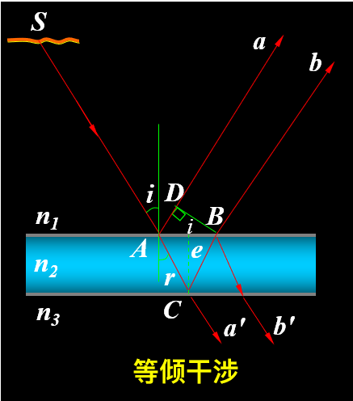- 半波损 \(\delta'\)：界面反射导致的相位跳变
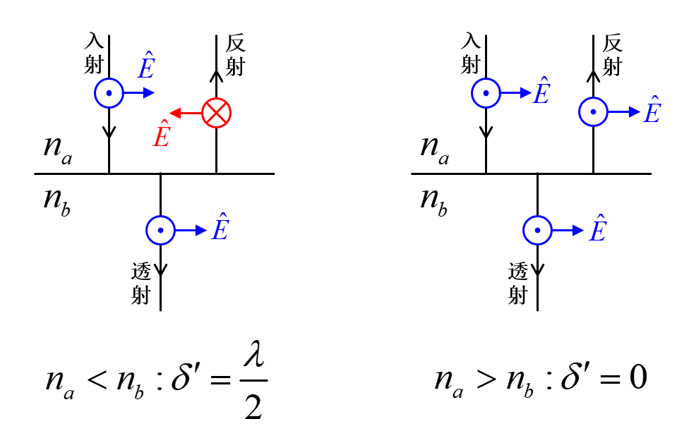- 光程差（\(\delta' = \dfrac{\lambda}{2}\)
） ：
\[ \delta = 2e \sqrt{n_2^2 - n_1^2 \sin^2 i} + \delta' = \begin{cases}k \lambda, & k = 1, 2, 3, \dots \\ k \lambda + \dfrac{\lambda}{2}, & k = 0, 1, 2, \dots \end{cases} \]- 在等倾干涉条纹中，\(i \downarrow \rightarrow \delta \uparrow \rightarrow k \uparrow\)，因此中央处 \(k\) 最大
-
光垂直照射薄膜时，光程差 \(\delta = 2n_2 e + \dfrac{\lambda}{2}\)
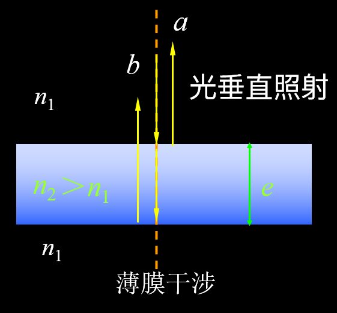- 相长干涉：\(\delta = k \lambda, k = 0, 1, 2\)
- 相消干涉：\(\delta = k \lambda + \dfrac{\lambda}{2}, k = 0, 1, 2\)
-
等厚干涉：由于干涉薄膜上下表面不平行，造成反射光线 \(a_1\) , \(b_1\) 不平行，它们在薄膜上表面附近干涉
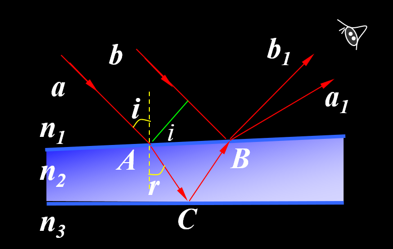- 光程差：\(\delta = 2n_2 e \cos r + \delta' = 2e\sqrt{n_2^2 - n_1^2 \sin^2 i} + \delta'\)
-
在实际应用中，\(i = r = 0\)，因此 \(\delta = 2n_2e + \delta' = \begin{cases}k \lambda & k = 1, 2, 3, \dots \\ (2k+1) \dfrac{\lambda}{2} & k = 0, 1, 2, \dots \end{cases}\)
- \(n_2\) 为中间介质的折射率，由于中间介质通常为空气，因此令 \(n_2 = 1\)
-
劈尖干涉：干涉条纹是明暗相间等间距的直条纹
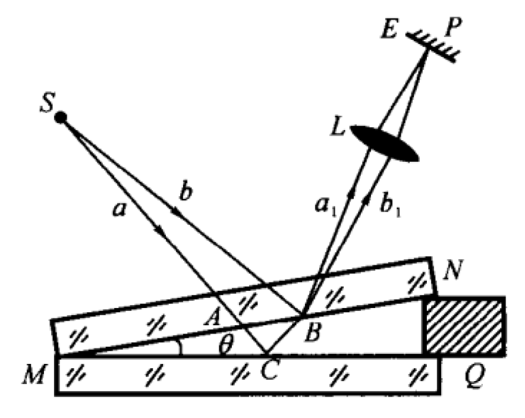-
明纹：
- 光程差：\(\delta_{\text{light}} = 2e + \dfrac{\lambda}{2} = k \lambda, k = 1, 2, 3, \dots\)
- 第 \(k\) 条明纹对应的厚度：\(e_{k, \text{light}} = \dfrac{k}{2}\lambda - \dfrac{\lambda}{4}\)
-
暗纹：
- 光程差：\(\delta_{\text{dark}} = 2e + \dfrac{\lambda}{2} = (2k + 1) \dfrac{\lambda}{2}, k = 0, 1, 2, \dots\)
- 第 \(k\) 条暗纹对应的厚度：\(e_{k, \text{dark}} = \dfrac{k}{2}\lambda\)
- \(e = 0\) 处为 0 级暗纹
-
条纹间距 \(l = \dfrac{\lambda}{2\sin \theta}\)
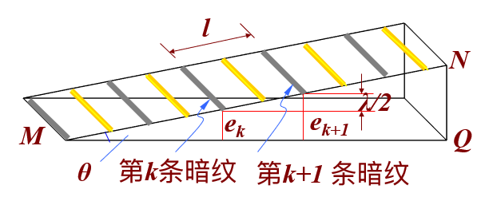 -
-
牛顿环：将一曲率半径很大的球冠置于一平板玻璃上，即构成牛顿环，干涉条纹是明暗相间的同心圆环
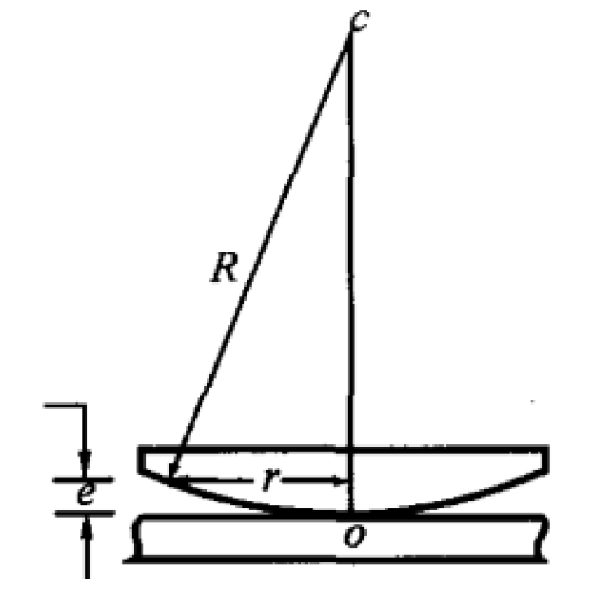-
明纹：
- 光程差：\(\delta_{\text{light}} = 2e + \dfrac{\lambda}{2} = k \lambda, k = 1, 2, 3, \dots\)
- 条纹半径：\(r_{k, \text{light}} = \sqrt{\dfrac{(2k - 1)R\lambda}{2}}, k = 1, 2, 3, \dots\)
-
暗纹：
- 光程差：\(\delta_{\text{dark}} = 2e + \dfrac{\lambda}{2} = (2k + 1) \dfrac{\lambda}{2}, k = 0, 2, 3, \dots\)
- 条纹半径：\(r_{k, \text{dark}} = \sqrt{kR\lambda}, k = 0, 1, 2, \dots\)
-
厚度与条纹半径的关系：\(e = \dfrac{r^2}{2R}\)
-
光的衍射⚓︎
衍射现象：波在传播过程中，绕过障碍物的边缘，偏离直线传播的现象，称为波的衍射。当光遇到的障碍物尺寸与光波的波长相当时，产生光的衍射现象。
分类：
- 菲涅耳衍射：衍射屏离光源和接收屏为有限距离的衍射。
- 夫琅禾费衍射：衍射屏离光源和接收屏无限远的衍射，相当于入射光和衍射光都为平行光。实验上可利用两个透镜来实现。
单缝衍射⚓︎
-
模型参数
- \(a\)：缝宽
- \(\theta\)：光线相对缝面法线的偏转角
- \(f\)：透镜焦距
- \(x\)：条件位置到中心的距离
- \(\sin \theta \approx \tan \theta = \dfrac{x}{f}\)
-
明暗条纹位置
- 中央明纹中心：\(\theta = 0\)，光照最强
- 暗纹中心：\(a \sin \theta = \pm k \lambda, k = 1, 2, 3, \dots\)
- 明纹中心：\(a \sin \theta = \pm (k + \dfrac{1}{2})\lambda, k = 1, 2, 3, \dots\)
- 若不是垂直入射，而是存在入射角 \(i\)，则将 \(\sin \theta\) 替换为 \(\sin \theta + \sin i\)
单缝衍射图样的特征：
- 条纹的亮度分布：中央明纹的光强最大，随着 k 增加，波带数增多，未被抵消的波带面积变小，条纹光强减弱
-
中央明纹的半宽度 \(\Delta \theta\)：第一级暗纹的衍射角
- \(\Delta \theta = \theta_1 = \arcsin \dfrac{\lambda}{a} \approx \dfrac{\lambda}{a}\)
-
色散效应：
- \(\lambda\) 一定，\(a \downarrow, \theta \uparrow\)
- \(a\) 不变，\(\lambda \uparrow, \theta \uparrow\)
光强分布：
- 对于任意衍射角 \(\theta\)，\(P\) 点的光强为 \(I = I_0 \dfrac{\sin^2 u}{u^2}\)，其中 \(u = \dfrac{\pi a}{\lambda} \sin \theta\)
-
相对光强 \(\dfrac{I}{I_0}\) 随 \(u\) 的分布曲线见下图：
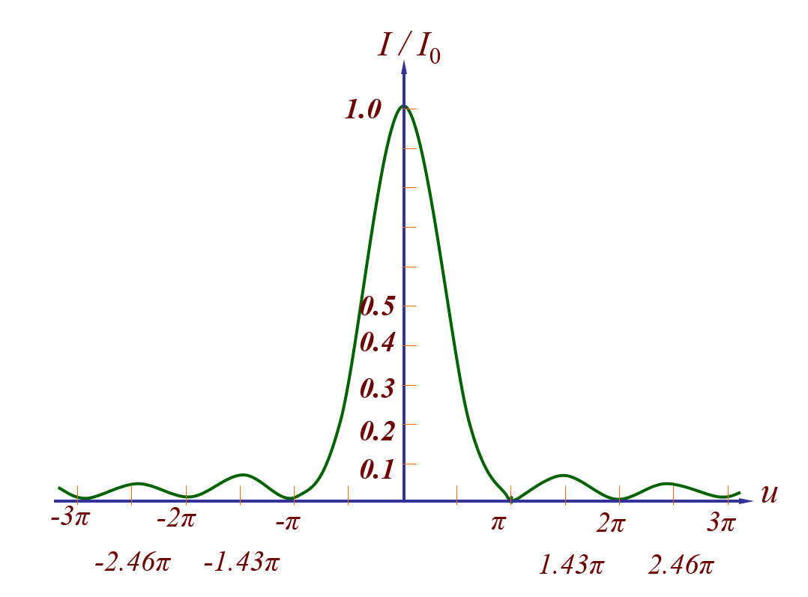- 中央明纹：\(\theta = 0\) 处，\(I = I_0\)
- 暗纹位置：\(u \ne 0\) 而 \(\sin u = 0\) 时为暗纹，满足：\(u = \dfrac{\pi a}{\lambda}\sin \theta = \pm k \pi, a \sin \theta = \pm k \lambda, k = 1, 2, 3, \dots\)
- 明纹位置：各级明纹满足 \(\dfrac{\text{d}}{\text{d}u}(\dfrac{\sin^2 u}{u^2}) = 0\)，即 \(\tan u = u\)
- 解出：\(u_1 = \pm 1.43 \pi, u_2 = \pm 2.46 \pi, u_3 = \pm 3.47 \pi\)
光栅衍射⚓︎
光栅：任何能起周期性地分割波阵面作用的衍射屏，可视为多个规律排列的单缝
-
光栅参数
- \(a\)：透光缝的宽度
- \(b\)：不透光刻痕的宽度
- \(d\)：光栅常数，\(d = a + b\)
- \(N\)：单缝数量
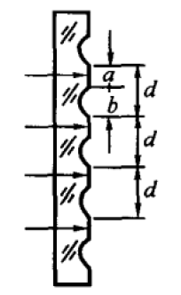 -
主极大明纹的形成
- 光栅方程：\(d \sin \theta = \pm k \lambda, k = 0, 1, 2, \dots\)，满足该方程的 \(\theta\) 处可以看到明纹
- 由于 \(-\dfrac{\pi}{2} < \theta < \dfrac{\pi}{2}\)，因此 \(k\) 存在最大值和最小值，也就是主极大个数是有限的
-
相邻两光振动的相位差：\(\Delta \varphi = \dfrac{2 \pi}{\lambda} d\sin \theta\)
-
\(N\) 个狭缝的暗纹方程：\(d\sin \theta = k' \dfrac{\lambda}{N}, k' \ne N, 2N, 3N, \dots\)
- 两相邻主极大之间有 \(N - 1\) 条暗纹
- \(k' = N, 2N, 3N\) 时满足明纹方程
-
缺级：某些衍射角 \(\theta\) 同时满足光栅方程和单缝衍射的暗纹条件，此时原定的主极大就会变成暗纹
\[ \begin{cases}a \sin \theta = k_1 \lambda \\ d \sin \theta = k_2 \lambda\end{cases} \Rightarrow k_2 = \dfrac{d}{a}k_1 \]- \(k_1\) 取遍正整数，若算出 \(k_2\) 也是正整数，那么这个 \(k_2\) 就会缺级
-
光栅光谱：
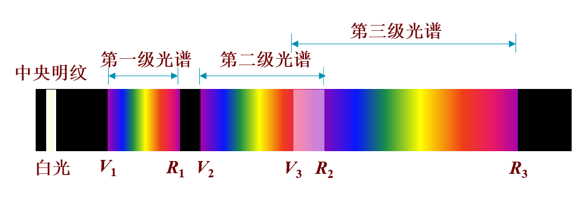 -
光栅分辨本领 \(R = \dfrac{\overline{\lambda}}{\Delta \lambda} = kN\)
- 在某级恰好能分辨的两条谱线的平均波长 \(\lambda\) 与其波长差 \(\Delta \lambda\) 的比值
其他衍射⚓︎
-
圆孔衍射：\(\theta_{\text{min}} = 1.22 \dfrac{\lambda}{D}\)，其中 \(D\) 为圆孔直径
- 当 \(\theta < \theta_{\text{min}}\) 时，仪器或人就无法分辨两个点
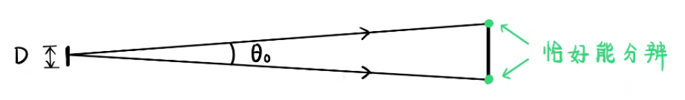- 一级暗环包围的中央亮斑称为爱里斑，爱里斑的角半径即为 \(\theta_{\text{min}}\), 半径 \(R\) 为：\(R = f \tan \theta_{\text{min}} \approx f\theta_{\text{min}} \approx 1.22f \dfrac{\lambda}{D}\)
-
X 射线在晶体上的衍射
- 布拉格公式：能够产生强反射的 \(\theta\) 为：\(2d \sin \theta = k \lambda, k = 1, 2, \dots\)，其中 \(\theta\) 为入射光与晶面间的掠射角，\(d\) 为相邻晶面间距
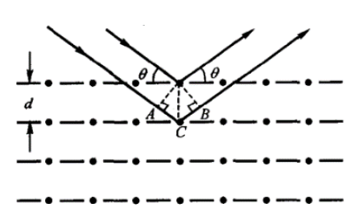
光的偏振⚓︎
光束的分类：
- 线偏振光：空间各点的光矢量都沿同一个固定的方向振动
- 自然光：两个振动方向互相垂直、相位差随机、等振幅的线偏振光组合
- 部分偏振光：介于自然光和线偏振光之间，振动在各个方向上的振幅不同
偏振片偏振⚓︎
理想偏振片：平行于指定方向的振动分量完全通过，垂直于指定方向的振动分量完全吸收
马吕斯定律：
- 自然光：\(I = \dfrac{1}{2}I_0\)
- 线偏振光：\(I = I_0 \cos^2 \theta\)
- 思路：将光振动矢量 \(A\) 分解为平行于指定方向和垂直于指定方向的两个振动分量，保留前者。光强 \(I\) 则与 \(A^2\) 成正比，在解题时，最好画一个振动矢量图，使思路更加清晰
- 参数：\(I_0\) 为入射光强，\(I\) 为透射光强，\(\theta\) 为原振动方向与指定方向的夹角（\(0 \le \theta < 90 \degree\)）
常见情形：
- 多偏振片组成序列：对每一个偏振片 i 都使用马吕斯定律，构建起一个“递推公式”
- 自然光与偏振光混合：分别对自然光和偏振光进行处理，然后叠加
反射折射偏振⚓︎
布儒斯特定律：入射角 \(i_0\) 时，反射光成为振动方向垂直于入射面的线偏振光，折射光成为最大偏振化程度的部分偏振光。
其中 \(i_0\) 为入射角（又称布儒斯特角
双折射⚓︎
双折射中的基本概念：
- 现象：光线入射到各向异性晶体时会分裂成偏振方向不同的两束光 两束光线分为服从折射定律的寻常光（o 光）和不服从的非寻常光（e 光）
- 光轴：一个特定的方向，光线只有沿此方向入射时才不发生双折射现象
- 主平面：o 光光线与 e 光光线分别与光轴组成的平面。当光轴与入射面平行时，o 光和 e 光主平面重合，且都在入射面内
双折射的原理：
-
光线传播速度的差异性
- 光在各向异性晶体中的传播速度与光矢量振动方向与光轴的位置关系有关
- 若振动方向与光轴垂直，传播速度为正常值，对应折射率为 \(n_o\)
- 若振动方向与光轴平行，传播速度达到最值，对应折射率为 \(n_e\)（主折射率）
- 若介于两者之间，则折射率也介于 \(n_o\) 和 \(n_e\) 之间
- 正晶体的 \(n_e > n_o\)，负晶体的 \(n_o > n_e\) oenn
- 光在各向异性晶体中的传播速度与光矢量振动方向与光轴的位置关系有关
-
双折射现象的判断（仅限光轴平行或垂直于入射面）
- 将振动方向分解为垂直于入射面和位于入射面且垂直于入射光线两个分量
- 确定光轴方向，判断这两个分量哪个与光轴平行（\(e\) 光
） ，哪个与光轴垂直（\(o\) 光） - 再根据折射率和入射角确定两束光的光路
波片：厚度均匀 (\(d\))、两表面与晶体光轴平行的晶体片，要求线偏振光正入射表面，偏振方向与光轴夹角为 \(\theta\)
- \(o\) 光、\(e\) 光分析
- 由于正入射，偏振方向与光轴都在晶体表面平面内
- 因此按光轴分解为正交的两个振动方向，就是 \(o\) 光和 \(e\) 光
-
相位差分析
- 由于正入射，两束光在波片中传播方向相同，但速度不同（折射率不同
） ，导致光程差 \(\delta\) 产生：
\[ \delta = |n_o - n_e|d \stackrel{\Delta \varphi = \frac{2 \pi}{\lambda}}{\longrightarrow} \Delta \varphi = \dfrac{2 \pi}{\lambda} |n_o - n_e|d \]- 对于确定的 \(\lambda\)，要产生特定的相位差，波片厚度 \(d\) 就要取特定值
- 常见的波片有 \(\dfrac{1}{4}\) 波片（产生光程差 \(4\lambda\)
） 、\(\dfrac{1}{2}\) 波片（产生光程差 \(2\lambda\)） ，注意均是对特定波长的
- 由于正入射，两束光在波片中传播方向相同，但速度不同（折射率不同
偏振光的合成：偏振光通过晶体片后两方向的振动产生相位差，这两个振动可以合成为特殊偏振光
椭圆偏振光⚓︎
椭圆偏振光：一线偏振光垂直入射波晶片后将分为偏振方向互相垂直的 \(o\) 光和 \(e\) 光 , 彼此有恒定相位差 . 两光的合振动矢量 , 其端点轨迹一般为椭圆。
- 相位差：\(\Delta \varphi = \varphi_o - \varphi_e = \dfrac{2 \pi}{\lambda}(n_o - n_e)d\)
- 椭圆偏振光：\(A_o \cos (\omega t + \varphi_o), A_e \cos (\omega t + \varphi_e)\)
- 圆偏振光：\(A_e = A_o, \Delta \varphi_o = \dfrac{\pi}{2}, \dfrac{3 \pi}{2}\)（左右两图）
评论区